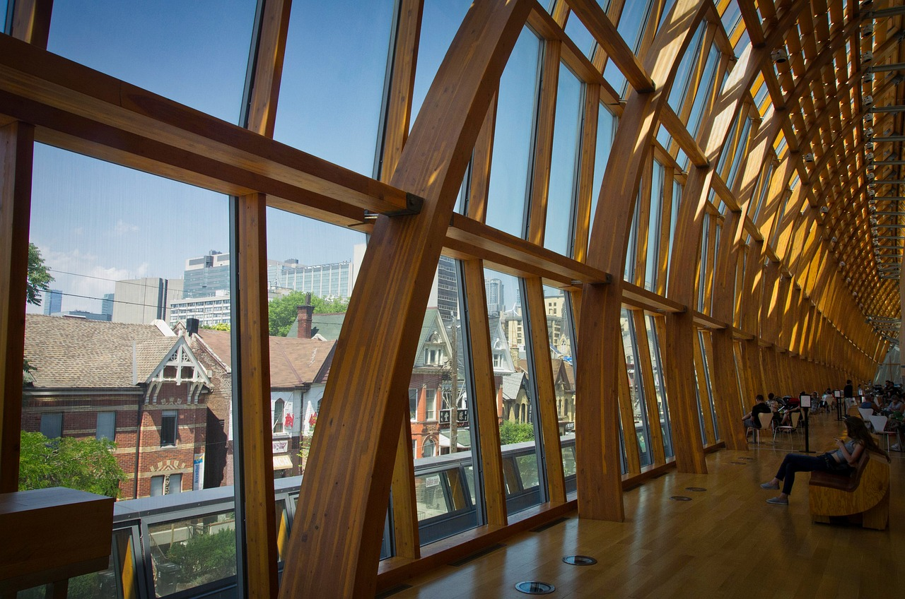
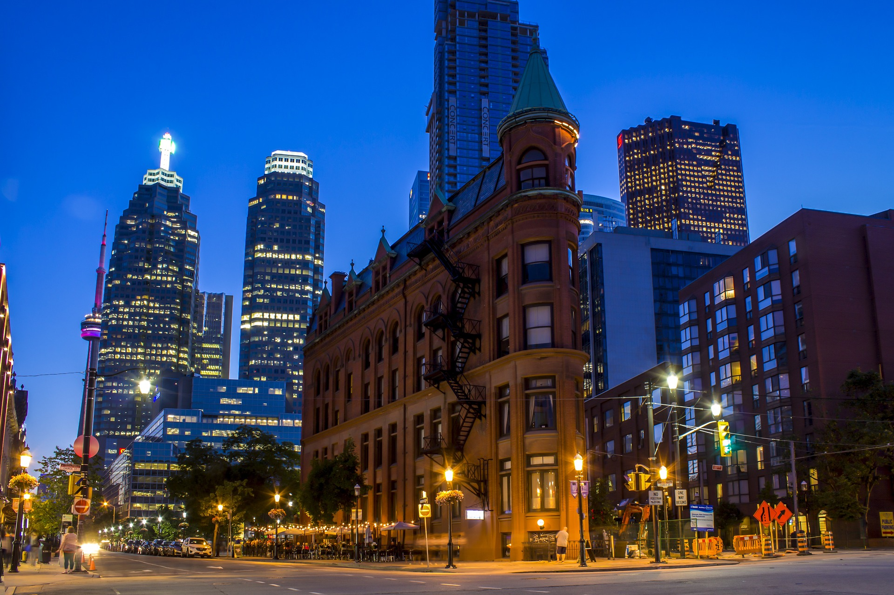

VenueThe 2023 IASE Satellite conference will be hosted by the University of Toronto's Department of Statistical Sciences. The venue is centrally located in Toronto, with many attractions within walking distance including historical buildings (University College, Queen's Park), museums (Royal Ontario Museum, Art Gallery of Ontario), and vibrant neightborhoods (Kensington Market, The Annex). VisasDelegates from certain countries will need a visa to enter Canada. To find out if you need a visa and for information on visa applications, please visit the WSC64 Visa site. Delegates are advised to apply for visas well in advance of the conference, and before booking non-refundable flight tickets and accommodation. VisasMeals Lunch and refreshments will be provided on 13th (Tuesday) until 15th (Thursday) at the conference venue (included in the conference fee). |
Local Attractions University of Toronto
University of Toronto
 Art Gallery of Ontario  Financial District  Queens Park
Queens Park
(images from pixabay) |

IASE 2023 Satellite Conference
Fostering Learning of
Statistics and Data Science
Hybrid Conference
11 – 13 July 2023, Toronto, Canada